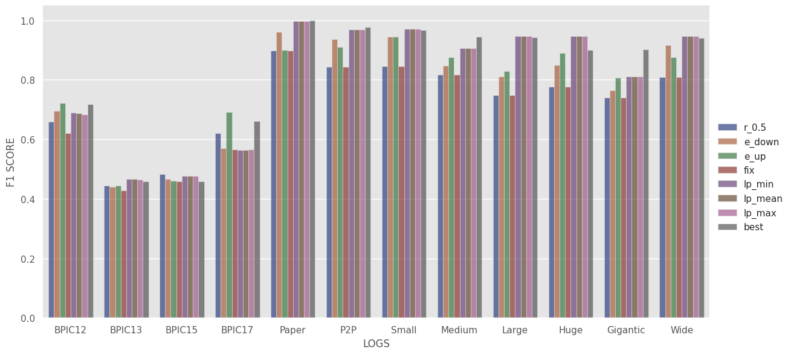
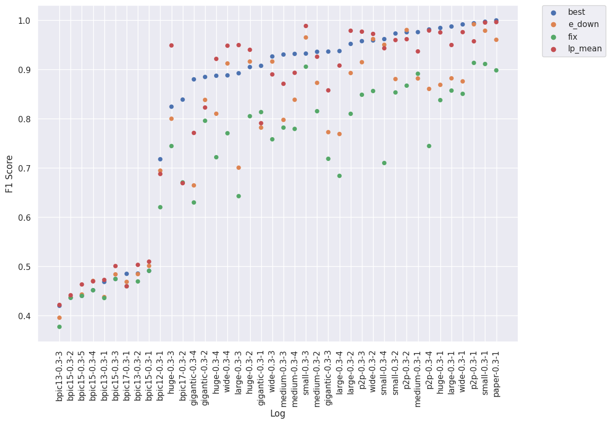
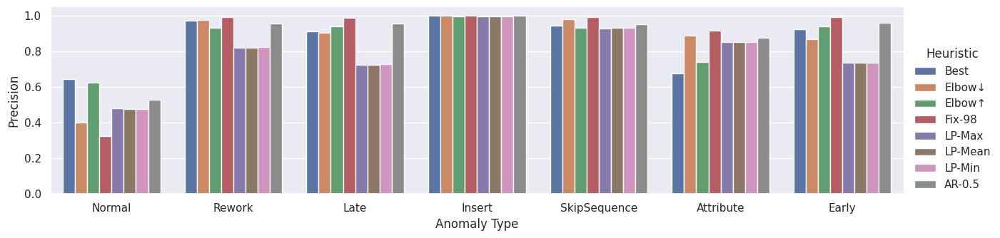
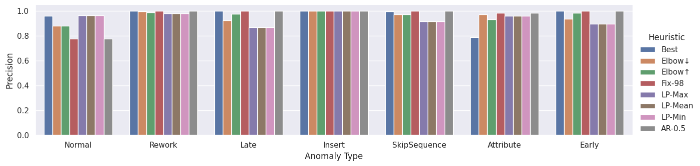

from fastai.basics import *
from pympp.process import *
from pympp.anomaly.detect import *
from pympp.anomaly.heuristics import *
from sklearn.metrics import f1_score,accuracy_score,precision_score,recall_score
import seaborn as sns
from fastai.tabular.model import get_emb_sz
from bayes_opt import BayesianOptimizationBINET Performance
Load Logs and Models
logs = [Path(fn).stem[:-4] for fn in progress_bar(glob.glob(f'../data/logs/csv/dapnn_ds/binet_logs/*'))]
len(logs)
100.00% [40/40 00:00<00:00]
40learner_path=f'models/binet_logs/'def load_pred_model(learner_path,train_log_path,log_name,cols=['activity']):
p = f'{learner_path}/{log_name}_vocab.p'
with open(p, 'rb') as fp:
categorify = pickle.load(fp)
log = import_log(train_log_path)
o = process_test(log,categorify,cols)
dls=o.get_dls()
loss=partial(multi_loss_sum,o)
emb_szs = get_emb_sz(o)
m=MultivariateModel(emb_szs)
learn=Learner(dls, m, path=learner_path, model_dir='.', loss_func=loss, metrics=get_metrics(o))
learn.load(log_name,with_opt=False)
m=learn.model.cuda()
return m, categorify
def multivariate_anomaly_score(res,o,idx,cols):
score_df=pd.DataFrame()
for cidx,_ in enumerate(cols):
sm = nn.Softmax(dim=1)
p = sm(res[cidx].cpu())
pred = p.max(1)[0]
y = o.items[cols[cidx]].iloc[idx].values
truth=p[list(range(len(y))),y]
score = ((pred - truth) / pred).tolist()
score_df[cols[cidx]] = score
score_df['trace_id']=o.items.index.to_series().iloc[idx].values
return score_dfdef get_score_df(log_name):
fn=f'./data/logs/csv/dapnn_ds/binet_logs/{log_name}.csv.gz'
cols= get_attr(attr_dict,log_name)
training_log_path=f'./data/logs/csv/dapnn_ds/binet_logs/{log_name}.csv.gz'
m2, categorify = load_pred_model(learner_path,training_log_path,log_name,cols=cols)
log = import_log(fn,cols)
o = process_test(log,categorify,cols)
res,idx=predict_next_step(o,m2)
score_df=multivariate_anomaly_score(res,o,idx,cols)
return score_df,cols,olog_name= 'bpic15-0.3-4'
score_df,cols,o = get_score_df(log_name)/tmp/ipykernel_3414969/1108395208.py:2: DtypeWarning: Columns (17) have mixed types.Specify dtype option on import or set low_memory=False.
score_df,cols,o = get_score_df(log_name)
/home/lahann/mambaforge/envs/pympp/lib/python3.8/site-packages/IPython/core/interactiveshell.py:3398: DtypeWarning: Columns (17) have mixed types.Specify dtype option on import or set low_memory=False.
exec(code_obj, self.user_global_ns, self.user_ns)max_error_cases = score_df.groupby('trace_id').max()
y_true =o.items.groupby(o.items.index)['anomaly'].last().to_numpy() != 'normal'all_cols = np.unique([i for j in attr_dict.values() for i in j ])Best Heuristic - Bayesian Optimization
all_cols =['activity', 'user', 'day', 'country', 'company','org:resource',]def optimize(**settings):
y_pred =(np.array([(max_error_cases[c]>settings[c]).tolist() for c in cols]).max(axis=0))
return (f1_score(y_pred,y_true))
# Bounded region of parameter space
pbounds = {c:(0.9,1.0) for c in cols}# Only run this if you want to recreate the best_th_df, takes arround 3h
res = []
n_iter = 500
for log_name in progress_bar(logs):
score_df,cols,o = get_score_df(log_name)
max_error_cases = score_df.groupby('trace_id').max()
y_true =o.items.groupby(o.items.index)['anomaly'].last().to_numpy() != 'normal'
pbounds = {c:(0.8,1.0) for c in cols}
optimizer = BayesianOptimization(
f=optimize,
pbounds=pbounds,
verbose=0,
random_state=1,
)
optimizer.maximize(init_points=20, n_iter=n_iter)
res.append([log_name,optimizer.max['target']]+
[optimizer.max['params'][c] if c in cols else 0.0 for c in all_cols ])
100.00% [40/40 00:57<00:00]
/tmp/ipykernel_3414969/1864857608.py:4: DtypeWarning: Columns (17) have mixed types.Specify dtype option on import or set low_memory=False.
score_df,cols,o = get_score_df(log_name)
/tmp/ipykernel_3414969/1864857608.py:4: DtypeWarning: Columns (17) have mixed types.Specify dtype option on import or set low_memory=False.
score_df,cols,o = get_score_df(log_name)
/home/lahann/mambaforge/envs/pympp/lib/python3.8/site-packages/IPython/core/interactiveshell.py:3398: DtypeWarning: Columns (17) have mixed types.Specify dtype option on import or set low_memory=False.
exec(code_obj, self.user_global_ns, self.user_ns)
/tmp/ipykernel_3414969/1864857608.py:4: DtypeWarning: Columns (17) have mixed types.Specify dtype option on import or set low_memory=False.
score_df,cols,o = get_score_df(log_name)
/home/lahann/mambaforge/envs/pympp/lib/python3.8/site-packages/IPython/core/interactiveshell.py:3398: DtypeWarning: Columns (17) have mixed types.Specify dtype option on import or set low_memory=False.
exec(code_obj, self.user_global_ns, self.user_ns)
/tmp/ipykernel_3414969/1864857608.py:4: DtypeWarning: Columns (17) have mixed types.Specify dtype option on import or set low_memory=False.
score_df,cols,o = get_score_df(log_name)
/home/lahann/mambaforge/envs/pympp/lib/python3.8/site-packages/IPython/core/interactiveshell.py:3398: DtypeWarning: Columns (17) have mixed types.Specify dtype option on import or set low_memory=False.
exec(code_obj, self.user_global_ns, self.user_ns)
/tmp/ipykernel_3414969/1864857608.py:4: DtypeWarning: Columns (17) have mixed types.Specify dtype option on import or set low_memory=False.
score_df,cols,o = get_score_df(log_name)
/home/lahann/mambaforge/envs/pympp/lib/python3.8/site-packages/IPython/core/interactiveshell.py:3398: DtypeWarning: Columns (17) have mixed types.Specify dtype option on import or set low_memory=False.
exec(code_obj, self.user_global_ns, self.user_ns)best_th_df = pd.DataFrame(res,columns=['log_name','best F1 Score',*all_cols])
best_th_df| log_name | best F1 Score | activity | user | day | country | company | org:resource | |
|---|---|---|---|---|---|---|---|---|
| 0 | bpic15-0.3-4 | 0.451471 | 0.944065 | 0.000000 | 0.000000 | 0.000000 | 0.000000 | 0.818468 |
| 1 | large-0.3-4 | 0.937398 | 0.940005 | 1.000000 | 1.000000 | 0.999750 | 0.981446 | 0.000000 |
| 2 | small-0.3-4 | 0.961668 | 0.873245 | 1.000000 | 1.000000 | 0.931696 | 1.000000 | 0.000000 |
| 3 | bpic13-0.3-3 | 0.419858 | 0.824835 | 0.000000 | 0.000000 | 0.000000 | 0.000000 | 0.993919 |
| 4 | medium-0.3-3 | 0.930289 | 0.823992 | 0.972513 | 0.964294 | 0.960638 | 0.000000 | 0.000000 |
| 5 | medium-0.3-1 | 0.975855 | 0.960149 | 0.993652 | 0.000000 | 0.000000 | 0.000000 | 0.000000 |
| 6 | bpic17-0.3-1 | 0.484787 | 0.893105 | 0.000000 | 0.000000 | 0.000000 | 0.000000 | 1.000000 |
| 7 | wide-0.3-3 | 0.926388 | 0.847682 | 1.000000 | 0.946180 | 0.995507 | 0.000000 | 0.000000 |
| 8 | large-0.3-2 | 0.951917 | 0.950029 | 0.949633 | 0.997772 | 0.000000 | 0.000000 | 0.000000 |
| 9 | bpic17-0.3-2 | 0.838753 | 0.884222 | 0.000000 | 0.000000 | 0.000000 | 0.000000 | 0.991578 |
| 10 | bpic13-0.3-1 | 0.468346 | 0.824835 | 0.000000 | 0.000000 | 0.000000 | 0.000000 | 0.993919 |
| 11 | small-0.3-3 | 0.932209 | 0.941794 | 0.960505 | 0.932191 | 0.948540 | 0.000000 | 0.000000 |
| 12 | bpic12-0.3-1 | 0.717622 | 0.975623 | 0.000000 | 0.000000 | 0.000000 | 0.000000 | 0.000000 |
| 13 | huge-0.3-2 | 0.904886 | 0.950029 | 0.949633 | 0.997772 | 0.000000 | 0.000000 | 0.000000 |
| 14 | p2p-0.3-3 | 0.957556 | 0.931714 | 0.940759 | 1.000000 | 1.000000 | 0.000000 | 0.000000 |
| 15 | wide-0.3-4 | 0.887997 | 0.885476 | 1.000000 | 1.000000 | 1.000000 | 1.000000 | 0.000000 |
| 16 | huge-0.3-1 | 0.984322 | 0.960149 | 0.993652 | 0.000000 | 0.000000 | 0.000000 | 0.000000 |
| 17 | gigantic-0.3-1 | 0.907391 | 0.937300 | 0.966925 | 0.000000 | 0.000000 | 0.000000 | 0.000000 |
| 18 | p2p-0.3-1 | 0.993802 | 0.975278 | 0.978921 | 0.000000 | 0.000000 | 0.000000 | 0.000000 |
| 19 | wide-0.3-2 | 0.958913 | 0.950029 | 0.949633 | 0.997772 | 0.000000 | 0.000000 | 0.000000 |
| 20 | bpic15-0.3-2 | 0.436090 | 0.944065 | 0.000000 | 0.000000 | 0.000000 | 0.000000 | 0.818468 |
| 21 | large-0.3-1 | 0.987251 | 0.960149 | 0.993652 | 0.000000 | 0.000000 | 0.000000 | 0.000000 |
| 22 | bpic15-0.3-1 | 0.490875 | 0.944065 | 0.000000 | 0.000000 | 0.000000 | 0.000000 | 0.818468 |
| 23 | gigantic-0.3-3 | 0.936312 | 0.895252 | 1.000000 | 0.976421 | 1.000000 | 0.000000 | 0.000000 |
| 24 | medium-0.3-4 | 0.931641 | 0.940106 | 1.000000 | 1.000000 | 0.984717 | 1.000000 | 0.000000 |
| 25 | medium-0.3-2 | 0.935906 | 0.950029 | 0.949633 | 0.997772 | 0.000000 | 0.000000 | 0.000000 |
| 26 | huge-0.3-4 | 0.887196 | 0.896746 | 1.000000 | 1.000000 | 1.000000 | 1.000000 | 0.000000 |
| 27 | gigantic-0.3-4 | 0.879924 | 0.926454 | 1.000000 | 0.998477 | 0.981558 | 1.000000 | 0.000000 |
| 28 | bpic13-0.3-2 | 0.485372 | 0.800000 | 0.000000 | 0.000000 | 0.000000 | 0.000000 | 1.000000 |
| 29 | p2p-0.3-2 | 0.975610 | 0.950029 | 0.949633 | 0.997772 | 0.000000 | 0.000000 | 0.000000 |
| 30 | bpic15-0.3-3 | 0.474283 | 0.944065 | 0.000000 | 0.000000 | 0.000000 | 0.000000 | 0.818468 |
| 31 | bpic15-0.3-5 | 0.439946 | 0.944065 | 0.000000 | 0.000000 | 0.000000 | 0.000000 | 0.818468 |
| 32 | large-0.3-3 | 0.892308 | 0.867383 | 1.000000 | 0.978184 | 0.996034 | 0.000000 | 0.000000 |
| 33 | small-0.3-2 | 0.973026 | 0.950029 | 0.949633 | 0.997772 | 0.000000 | 0.000000 | 0.000000 |
| 34 | huge-0.3-3 | 0.824321 | 0.960149 | 0.938465 | 0.862685 | 0.993652 | 0.000000 | 0.000000 |
| 35 | wide-0.3-1 | 0.991540 | 0.960149 | 0.993652 | 0.000000 | 0.000000 | 0.000000 | 0.000000 |
| 36 | paper-0.3-1 | 0.999659 | 0.883404 | 0.944065 | 0.000000 | 0.000000 | 0.000000 | 0.000000 |
| 37 | small-0.3-1 | 0.996956 | 0.960149 | 0.993652 | 0.000000 | 0.000000 | 0.000000 | 0.000000 |
| 38 | gigantic-0.3-2 | 0.884754 | 0.950029 | 0.949633 | 0.997772 | 0.000000 | 0.000000 | 0.000000 |
| 39 | p2p-0.3-4 | 0.981248 | 0.946049 | 0.995983 | 1.000000 | 1.000000 | 0.957152 | 0.000000 |
Other Heuristics
def multi_attr_f1_score(y_true,max_error_cases,ths):
y_pred =(np.array([(max_error_cases[c]>ths[c]).tolist() for c in cols]).max(axis=0))
return f1_score(y_pred,y_true)def threshold_anomaly_ratio_df(max_error_cases,min_th= 0.0):
res = []
for col in cols:
ths = max_error_cases[col].unique()
ths = ths[ths >min_th]
r = np.array([sum(max_error_cases[col] >th) for th in ths])/len(max_error_cases)
res+=zip(ths,r,[col]*len(ths))
return pd.DataFrame(res,columns=['Th','Anomaly Ratio','Col'])
def threshold_anomaly_ratio_df_fixed(max_error_cases):
ths =np.arange(100)*0.001+0.9
res=[]
for col in cols:
r = np.array([sum(max_error_cases[col] >th) for th in ths])/len(max_error_cases)
res+=zip(ths,r,[col]*len(ths))
return pd.DataFrame(res,columns=['Th','Anomaly Ratio','Col'])heuristics = [partial(get_ratio_th,0.5),elbow_heuristic,
partial(get_fixed_heuristic,0.98),get_lowest_plateau_heuristic]
heuristic_names = ['r_0.5','e_down','e_up','fix','lp_min','lp_mean','lp_max']log_name='paper-0.3-1'
score_df,cols,o = get_score_df(log_name)
max_error_cases = score_df.groupby('trace_id').max()
y_true =o.items.groupby(o.items.index)['anomaly'].last().to_numpy() != 'normal'
df =threshold_anomaly_ratio_df_fixed(max_error_cases)
multi_attr_f1_score(y_true,max_error_cases,{'activity':0.945,'user':0.984})0.9962341663813762get_lowest_plateau_heuristic(df[df['Col']=='user'])(Th 0.985
Anomaly Ratio 0.1862
Col user
Name: 185, dtype: object,
Th 0.985
Anomaly Ratio 0.1862
Col user
Name: 185, dtype: object,
Th 0.985
Anomaly Ratio 0.1862
Col user
Name: 185, dtype: object)test = df[df['Col']=='activity'].copy()
test.index = test['Th']get_lowest_plateau_heuristic(test)(Th 0.901
Anomaly Ratio 0.2462
Col activity
Name: 0.901, dtype: object,
Th 0.944
Anomaly Ratio 0.2462
Col activity
Name: 0.9440000000000001, dtype: object,
Th 0.988
Anomaly Ratio 0.2462
Col activity
Name: 0.988, dtype: object)log_name='paper-0.3-1'
score_df,cols,o = get_score_df(log_name)
max_error_cases = score_df.groupby('trace_id').max()
y_true =o.items.groupby(o.items.index)['anomaly'].last().to_numpy() != 'normal'
df =threshold_anomaly_ratio_df_fixed(max_error_cases)
#df =threshold_anomaly_ratio_df(max_error_cases)
h_ths = {col:[i for j in [[k.Th for k in listify(h(df[df['Col']==col]))] for h in heuristics] for i in j] for col in cols}
h_ths_df = pd.DataFrame(h_ths,index=heuristic_names).transpose()
h_ths_df['Log'] = log_name
h_ths_df| r_0.5 | e_down | e_up | fix | lp_min | lp_mean | lp_max | Log | |
|---|---|---|---|---|---|---|---|---|
| activity | 0.9 | 0.992 | 0.990 | 0.901 | 0.901 | 0.944 | 0.988 | paper-0.3-1 |
| user | 0.9 | 0.912 | 0.911 | 0.900 | 0.985 | 0.985 | 0.985 | paper-0.3-1 |
f1_scores={h:multi_attr_f1_score(y_true,max_error_cases,h_ths_df[h]) for h in heuristic_names}
f1_scores{'r_0.5': 0.8982219497240956,
'e_down': 0.9602836879432624,
'e_up': 0.8998459167950694,
'fix': 0.8982219497240956,
'lp_min': 0.9962341663813762,
'lp_mean': 0.9962341663813762,
'lp_max': 0.9962341663813762}res = []
res_ths = []
for log_name in progress_bar(logs):
score_df,cols,o = get_score_df(log_name)
max_error_cases = score_df.groupby('trace_id').max()
y_true =o.items.groupby(o.items.index)['anomaly'].last().to_numpy() != 'normal'
df =threshold_anomaly_ratio_df_fixed(max_error_cases)
#df =threshold_anomaly_ratio_df(max_error_cases)
h_ths = {col:[i for j in [[k.Th for k in listify(h(df[df['Col']==col]))] for h in heuristics] for i in j] for col in cols}
h_ths_df = pd.DataFrame(h_ths,index=heuristic_names).transpose()
h_ths_df['Log'] = log_name
res_ths+=h_ths_df.values.tolist()
f1_scores={h:multi_attr_f1_score(y_true,max_error_cases,h_ths_df[h]) for h in heuristic_names}
f1_scores['Log']= log_name
res.append(f1_scores)
heuristic_th_df = pd.DataFrame(res)
heuristic_th_df
100.00% [40/40 00:59<00:00]
/tmp/ipykernel_3414969/2538357640.py:4: DtypeWarning: Columns (17) have mixed types.Specify dtype option on import or set low_memory=False.
score_df,cols,o = get_score_df(log_name)
/home/lahann/mambaforge/envs/pympp/lib/python3.8/site-packages/IPython/core/interactiveshell.py:3398: DtypeWarning: Columns (17) have mixed types.Specify dtype option on import or set low_memory=False.
exec(code_obj, self.user_global_ns, self.user_ns)
/tmp/ipykernel_3414969/2538357640.py:4: DtypeWarning: Columns (17) have mixed types.Specify dtype option on import or set low_memory=False.
score_df,cols,o = get_score_df(log_name)
/home/lahann/mambaforge/envs/pympp/lib/python3.8/site-packages/IPython/core/interactiveshell.py:3398: DtypeWarning: Columns (17) have mixed types.Specify dtype option on import or set low_memory=False.
exec(code_obj, self.user_global_ns, self.user_ns)
/tmp/ipykernel_3414969/2538357640.py:4: DtypeWarning: Columns (17) have mixed types.Specify dtype option on import or set low_memory=False.
score_df,cols,o = get_score_df(log_name)
/home/lahann/mambaforge/envs/pympp/lib/python3.8/site-packages/IPython/core/interactiveshell.py:3398: DtypeWarning: Columns (17) have mixed types.Specify dtype option on import or set low_memory=False.
exec(code_obj, self.user_global_ns, self.user_ns)
/tmp/ipykernel_3414969/2538357640.py:4: DtypeWarning: Columns (17) have mixed types.Specify dtype option on import or set low_memory=False.
score_df,cols,o = get_score_df(log_name)
/home/lahann/mambaforge/envs/pympp/lib/python3.8/site-packages/IPython/core/interactiveshell.py:3398: DtypeWarning: Columns (17) have mixed types.Specify dtype option on import or set low_memory=False.
exec(code_obj, self.user_global_ns, self.user_ns)
/tmp/ipykernel_3414969/2538357640.py:4: DtypeWarning: Columns (17) have mixed types.Specify dtype option on import or set low_memory=False.
score_df,cols,o = get_score_df(log_name)
/home/lahann/mambaforge/envs/pympp/lib/python3.8/site-packages/IPython/core/interactiveshell.py:3398: DtypeWarning: Columns (17) have mixed types.Specify dtype option on import or set low_memory=False.
exec(code_obj, self.user_global_ns, self.user_ns)| r_0.5 | e_down | e_up | fix | lp_min | lp_mean | lp_max | Log | |
|---|---|---|---|---|---|---|---|---|
| 0 | 0.469136 | 0.470405 | 0.450185 | 0.451471 | 0.469498 | 0.469498 | 0.469498 | bpic15-0.3-4 |
| 1 | 0.683812 | 0.768873 | 0.912346 | 0.683812 | 0.907368 | 0.907923 | 0.908979 | large-0.3-4 |
| 2 | 0.709933 | 0.950145 | 0.943371 | 0.709933 | 0.943084 | 0.943084 | 0.943084 | small-0.3-4 |
| 3 | 0.391753 | 0.395604 | 0.397590 | 0.377088 | 0.421603 | 0.421603 | 0.419580 | bpic13-0.3-3 |
| 4 | 0.781832 | 0.797542 | 0.830393 | 0.781832 | 0.870879 | 0.870879 | 0.870879 | medium-0.3-3 |
| 5 | 0.891285 | 0.881666 | 0.912883 | 0.891285 | 0.936762 | 0.936674 | 0.935889 | medium-0.3-1 |
| 6 | 0.544370 | 0.468426 | 0.525774 | 0.459481 | 0.459481 | 0.459481 | 0.461569 | bpic17-0.3-1 |
| 7 | 0.758085 | 0.916066 | 0.806943 | 0.758085 | 0.889936 | 0.889936 | 0.890236 | wide-0.3-3 |
| 8 | 0.809877 | 0.892727 | 0.876196 | 0.809877 | 0.978667 | 0.978667 | 0.978667 | large-0.3-2 |
| 9 | 0.694332 | 0.669278 | 0.858127 | 0.670450 | 0.668974 | 0.668974 | 0.668974 | bpic17-0.3-2 |
| 10 | 0.449840 | 0.437579 | 0.440025 | 0.435620 | 0.472403 | 0.472403 | 0.472403 | bpic13-0.3-1 |
| 11 | 0.905615 | 0.965012 | 0.981543 | 0.905615 | 0.986047 | 0.988345 | 0.988345 | small-0.3-3 |
| 12 | 0.659213 | 0.694447 | 0.721668 | 0.620128 | 0.689842 | 0.687652 | 0.684029 | bpic12-0.3-1 |
| 13 | 0.805017 | 0.916031 | 0.941257 | 0.805017 | 0.939937 | 0.939937 | 0.939937 | huge-0.3-2 |
| 14 | 0.848600 | 0.914738 | 0.871881 | 0.848600 | 0.976789 | 0.976789 | 0.976789 | p2p-0.3-3 |
| 15 | 0.770405 | 0.912192 | 0.912023 | 0.770405 | 0.948236 | 0.948236 | 0.948236 | wide-0.3-4 |
| 16 | 0.837684 | 0.868746 | 0.947512 | 0.837684 | 0.975577 | 0.975234 | 0.975234 | huge-0.3-1 |
| 17 | 0.813358 | 0.781813 | 0.928790 | 0.813358 | 0.790813 | 0.790813 | 0.790385 | gigantic-0.3-1 |
| 18 | 0.913346 | 0.991741 | 0.963235 | 0.913346 | 0.957545 | 0.957173 | 0.957143 | p2p-0.3-1 |
| 19 | 0.856201 | 0.961786 | 0.926232 | 0.856201 | 0.972232 | 0.972232 | 0.972232 | wide-0.3-2 |
| 20 | 0.454545 | 0.436911 | 0.436090 | 0.436090 | 0.441261 | 0.441261 | 0.441261 | bpic15-0.3-2 |
| 21 | 0.857063 | 0.882013 | 0.865281 | 0.857063 | 0.948518 | 0.949672 | 0.951158 | large-0.3-1 |
| 22 | 0.518569 | 0.500963 | 0.493671 | 0.490875 | 0.509521 | 0.509521 | 0.509521 | bpic15-0.3-1 |
| 23 | 0.718496 | 0.772625 | 0.778030 | 0.718496 | 0.857563 | 0.857563 | 0.857563 | gigantic-0.3-3 |
| 24 | 0.775132 | 0.838451 | 0.869688 | 0.779234 | 0.893204 | 0.893204 | 0.893204 | medium-0.3-4 |
| 25 | 0.815190 | 0.872786 | 0.885749 | 0.815190 | 0.925835 | 0.925835 | 0.926812 | medium-0.3-2 |
| 26 | 0.721685 | 0.810028 | 0.847239 | 0.721685 | 0.920584 | 0.921463 | 0.922636 | huge-0.3-4 |
| 27 | 0.630247 | 0.664441 | 0.632649 | 0.629715 | 0.771056 | 0.771056 | 0.771280 | gigantic-0.3-4 |
| 28 | 0.489189 | 0.484236 | 0.492133 | 0.469314 | 0.503036 | 0.503036 | 0.503036 | bpic13-0.3-2 |
| 29 | 0.867094 | 0.980174 | 0.975421 | 0.867094 | 0.961525 | 0.961525 | 0.961525 | p2p-0.3-2 |
| 30 | 0.499408 | 0.483711 | 0.478950 | 0.474283 | 0.500573 | 0.500573 | 0.500573 | bpic15-0.3-3 |
| 31 | 0.471927 | 0.442779 | 0.438893 | 0.439946 | 0.463188 | 0.463188 | 0.463519 | bpic15-0.3-5 |
| 32 | 0.642612 | 0.700446 | 0.662090 | 0.642612 | 0.949521 | 0.949521 | 0.948849 | large-0.3-3 |
| 33 | 0.853288 | 0.880489 | 0.858198 | 0.853288 | 0.959727 | 0.959727 | 0.959727 | small-0.3-2 |
| 34 | 0.744374 | 0.799891 | 0.820757 | 0.744374 | 0.948801 | 0.948801 | 0.949416 | huge-0.3-3 |
| 35 | 0.850430 | 0.875817 | 0.857226 | 0.850430 | 0.975823 | 0.975823 | 0.975823 | wide-0.3-1 |
| 36 | 0.898222 | 0.960284 | 0.899846 | 0.898222 | 0.996234 | 0.996234 | 0.996234 | paper-0.3-1 |
| 37 | 0.911104 | 0.978709 | 0.995289 | 0.911104 | 0.995289 | 0.995289 | 0.995289 | small-0.3-1 |
| 38 | 0.795745 | 0.838137 | 0.884650 | 0.795745 | 0.822642 | 0.822642 | 0.822924 | gigantic-0.3-2 |
| 39 | 0.744456 | 0.860472 | 0.830008 | 0.744456 | 0.978738 | 0.979074 | 0.980419 | p2p-0.3-4 |
heuristic_th_df.describe()| r_0.5 | e_down | e_up | fix | lp_min | lp_mean | lp_max | |
|---|---|---|---|---|---|---|---|
| count | 40.000000 | 40.000000 | 40.000000 | 40.000000 | 40.000000 | 40.000000 | 40.000000 |
| mean | 0.721312 | 0.767954 | 0.778746 | 0.713463 | 0.814458 | 0.814513 | 0.814571 |
| std | 0.153024 | 0.188515 | 0.189436 | 0.163644 | 0.201974 | 0.202089 | 0.202227 |
| min | 0.391753 | 0.395604 | 0.397590 | 0.377088 | 0.421603 | 0.421603 | 0.419580 |
| 25% | 0.639520 | 0.668069 | 0.654730 | 0.627319 | 0.684625 | 0.682983 | 0.680265 |
| 50% | 0.764245 | 0.838294 | 0.858163 | 0.764245 | 0.923210 | 0.923649 | 0.924724 |
| 75% | 0.849058 | 0.912828 | 0.912480 | 0.849058 | 0.960176 | 0.960176 | 0.960176 |
| max | 0.913346 | 0.991741 | 0.995289 | 0.913346 | 0.996234 | 0.996234 | 0.996234 |
heuristic_th_df['best']=best_th_df['best F1 Score']ds=['BPIC12','BPIC13','BPIC15','BPIC17','Paper','P2P','Small','Medium','Large','Huge','Gigantic','Wide']
df =pd.DataFrame([heuristic_th_df[heuristic_th_df['Log'].str.contains(i.lower())].mean() for i in ds],index = ds)
res_binet_df = df.copy().T
res_binet_df| BPIC12 | BPIC13 | BPIC15 | BPIC17 | Paper | P2P | Small | Medium | Large | Huge | Gigantic | Wide | |
|---|---|---|---|---|---|---|---|---|---|---|---|---|
| r_0.5 | 0.659213 | 0.443594 | 0.482717 | 0.619351 | 0.898222 | 0.843374 | 0.844985 | 0.815860 | 0.748341 | 0.777190 | 0.739462 | 0.808780 |
| e_down | 0.694447 | 0.439140 | 0.466954 | 0.568852 | 0.960284 | 0.936781 | 0.943588 | 0.847611 | 0.811015 | 0.848674 | 0.764254 | 0.916465 |
| e_up | 0.721668 | 0.443249 | 0.459558 | 0.691950 | 0.899846 | 0.910137 | 0.944600 | 0.874679 | 0.828978 | 0.889191 | 0.806030 | 0.875606 |
| fix | 0.620128 | 0.427341 | 0.458533 | 0.564966 | 0.898222 | 0.843374 | 0.844985 | 0.816885 | 0.748341 | 0.777190 | 0.739329 | 0.808780 |
| lp_min | 0.689842 | 0.465680 | 0.476808 | 0.564228 | 0.996234 | 0.968649 | 0.971037 | 0.906670 | 0.946018 | 0.946225 | 0.810518 | 0.946557 |
| lp_mean | 0.687652 | 0.465680 | 0.476808 | 0.564228 | 0.996234 | 0.968640 | 0.971611 | 0.906648 | 0.946446 | 0.946359 | 0.810518 | 0.946557 |
| lp_max | 0.684029 | 0.465006 | 0.476874 | 0.565271 | 0.996234 | 0.968969 | 0.971611 | 0.906696 | 0.946913 | 0.946806 | 0.810538 | 0.946632 |
| best | 0.717622 | 0.457859 | 0.458533 | 0.661770 | 0.999659 | 0.977054 | 0.965965 | 0.943423 | 0.942218 | 0.900181 | 0.902095 | 0.941210 |
df['Log']=df.indexdef get_plot_data(th_df):
plot_data=th_df.melt(var_name='Heuristic',value_name='F1 Score',id_vars = ['Log'],value_vars=['r_0.5',
'e_down',
'e_up',
'fix',
'lp_min',
'lp_mean',
'lp_max',
'best',],ignore_index=False)
plot_data.index=range(len(plot_data))
return plot_data
plot_data = get_plot_data(df)sns.set_theme(style="darkgrid")
import matplotlib.pyplot as plt
plt.style.use('ggplot')g = sns.catplot(
data=plot_data, kind="bar",
x="Log", y="F1 Score", hue="Heuristic",
errorbar="sd", palette="dark", alpha=.6, height=6,aspect=2
)
g.despine(left=True)
g.set_axis_labels("LOGS", "F1 SCORE")
plt.xticks(rotation = 0)
g.legend.set_title("")
binet_synth_df =heuristic_th_df.sort_values('best')
def get_plot_data(th_df,id_vars=['Log Name'],value_vars = ['F1 Score','Anomaly Ratio']):
plot_data=th_df.melt(var_name='Heuristic',value_name='Score',id_vars =id_vars ,value_vars=value_vars,ignore_index=False)
plot_data['Threshold']=plot_data.index
plot_data.index=range(len(plot_data))
return plot_data
plot_data = get_plot_data(binet_synth_df,id_vars=['Log'],value_vars=['best',
'e_down',
'fix',
'lp_mean',
])
log2int = {j:i for i,j in enumerate(binet_synth_df['Log'].unique())}
plot_data ['Log']= plot_data['Log'].map(log2int)
plot_data ['F1 Score']=plot_data ['Score']
sns.set(rc={'figure.figsize':(11.7,8.27)})
g=sns.scatterplot(data =plot_data, x='Log',y='F1 Score', hue='Heuristic' ,linewidth=0,)
plt.legend(bbox_to_anchor=(1.05, 1), loc=2, borderaxespad=0.)
g.set_xticks(range(len(binet_synth_df)));
g.set_xticklabels(binet_synth_df['Log'].unique(),rotation = 90);
Anomaly Types
h_ths_df['lp_mean']activity 0.986
user 0.985
day 0.987
country 0.985
company 0.981
Name: lp_mean, dtype: float64log_name = 'large-0.3-4'
score_df,cols,o = get_score_df(log_name)
max_error_cases = score_df.groupby('trace_id').max()
y_true =o.items.groupby(o.items.index)['anomaly'].last().to_numpy() != 'normal'
df =threshold_anomaly_ratio_df_fixed(max_error_cases)
h_ths = {col:[i for j in [[k.Th for k in listify(h(df[df['Col']==col]))] for h in heuristics] for i in j] for col in cols}
h_ths_df = pd.DataFrame(h_ths,index=heuristic_names).transpose()
ths = h_ths_df['lp_mean']
y_pred =(np.array([(max_error_cases[c]>ths[c]).tolist() for c in cols]).max(axis=0))
k=o.items.groupby(o.items.index)['anomaly'].last().iloc[np.where(np.equal(y_pred, y_true))[0]]
k.value_counts()normal 3215
Early 267
Insert 262
SkipSequence 259
Rework 251
Late 239
Attribute 206
Name: anomaly, dtype: int64k=o.items.groupby(o.items.index)['anomaly'].last().iloc[np.where(~np.equal(y_pred, y_true))[0]]
k.value_counts()
multi_attr_f1_score(y_true,max_error_cases,ths.to_dict())0.9079229122055674thsactivity 0.981
user 0.978
day 0.984
country 0.984
company 0.975
Name: lp_mean, dtype: float64best_th_df| log_name | best F1 Score | activity | user | day | country | company | org:resource | |
|---|---|---|---|---|---|---|---|---|
| 0 | bpic15-0.3-4 | 0.451471 | 0.944065 | 0.000000 | 0.000000 | 0.000000 | 0.000000 | 0.818468 |
| 1 | large-0.3-4 | 0.937398 | 0.940005 | 1.000000 | 1.000000 | 0.999750 | 0.981446 | 0.000000 |
| 2 | small-0.3-4 | 0.961668 | 0.873245 | 1.000000 | 1.000000 | 0.931696 | 1.000000 | 0.000000 |
| 3 | bpic13-0.3-3 | 0.419858 | 0.824835 | 0.000000 | 0.000000 | 0.000000 | 0.000000 | 0.993919 |
| 4 | medium-0.3-3 | 0.930289 | 0.823992 | 0.972513 | 0.964294 | 0.960638 | 0.000000 | 0.000000 |
| 5 | medium-0.3-1 | 0.975855 | 0.960149 | 0.993652 | 0.000000 | 0.000000 | 0.000000 | 0.000000 |
| 6 | bpic17-0.3-1 | 0.484787 | 0.893105 | 0.000000 | 0.000000 | 0.000000 | 0.000000 | 1.000000 |
| 7 | wide-0.3-3 | 0.926388 | 0.847682 | 1.000000 | 0.946180 | 0.995507 | 0.000000 | 0.000000 |
| 8 | large-0.3-2 | 0.951917 | 0.950029 | 0.949633 | 0.997772 | 0.000000 | 0.000000 | 0.000000 |
| 9 | bpic17-0.3-2 | 0.838753 | 0.884222 | 0.000000 | 0.000000 | 0.000000 | 0.000000 | 0.991578 |
| 10 | bpic13-0.3-1 | 0.468346 | 0.824835 | 0.000000 | 0.000000 | 0.000000 | 0.000000 | 0.993919 |
| 11 | small-0.3-3 | 0.932209 | 0.941794 | 0.960505 | 0.932191 | 0.948540 | 0.000000 | 0.000000 |
| 12 | bpic12-0.3-1 | 0.717622 | 0.975623 | 0.000000 | 0.000000 | 0.000000 | 0.000000 | 0.000000 |
| 13 | huge-0.3-2 | 0.904886 | 0.950029 | 0.949633 | 0.997772 | 0.000000 | 0.000000 | 0.000000 |
| 14 | p2p-0.3-3 | 0.957556 | 0.931714 | 0.940759 | 1.000000 | 1.000000 | 0.000000 | 0.000000 |
| 15 | wide-0.3-4 | 0.887997 | 0.885476 | 1.000000 | 1.000000 | 1.000000 | 1.000000 | 0.000000 |
| 16 | huge-0.3-1 | 0.984322 | 0.960149 | 0.993652 | 0.000000 | 0.000000 | 0.000000 | 0.000000 |
| 17 | gigantic-0.3-1 | 0.907391 | 0.937300 | 0.966925 | 0.000000 | 0.000000 | 0.000000 | 0.000000 |
| 18 | p2p-0.3-1 | 0.993802 | 0.975278 | 0.978921 | 0.000000 | 0.000000 | 0.000000 | 0.000000 |
| 19 | wide-0.3-2 | 0.958913 | 0.950029 | 0.949633 | 0.997772 | 0.000000 | 0.000000 | 0.000000 |
| 20 | bpic15-0.3-2 | 0.436090 | 0.944065 | 0.000000 | 0.000000 | 0.000000 | 0.000000 | 0.818468 |
| 21 | large-0.3-1 | 0.987251 | 0.960149 | 0.993652 | 0.000000 | 0.000000 | 0.000000 | 0.000000 |
| 22 | bpic15-0.3-1 | 0.490875 | 0.944065 | 0.000000 | 0.000000 | 0.000000 | 0.000000 | 0.818468 |
| 23 | gigantic-0.3-3 | 0.936312 | 0.895252 | 1.000000 | 0.976421 | 1.000000 | 0.000000 | 0.000000 |
| 24 | medium-0.3-4 | 0.931641 | 0.940106 | 1.000000 | 1.000000 | 0.984717 | 1.000000 | 0.000000 |
| 25 | medium-0.3-2 | 0.935906 | 0.950029 | 0.949633 | 0.997772 | 0.000000 | 0.000000 | 0.000000 |
| 26 | huge-0.3-4 | 0.887196 | 0.896746 | 1.000000 | 1.000000 | 1.000000 | 1.000000 | 0.000000 |
| 27 | gigantic-0.3-4 | 0.879924 | 0.926454 | 1.000000 | 0.998477 | 0.981558 | 1.000000 | 0.000000 |
| 28 | bpic13-0.3-2 | 0.485372 | 0.800000 | 0.000000 | 0.000000 | 0.000000 | 0.000000 | 1.000000 |
| 29 | p2p-0.3-2 | 0.975610 | 0.950029 | 0.949633 | 0.997772 | 0.000000 | 0.000000 | 0.000000 |
| 30 | bpic15-0.3-3 | 0.474283 | 0.944065 | 0.000000 | 0.000000 | 0.000000 | 0.000000 | 0.818468 |
| 31 | bpic15-0.3-5 | 0.439946 | 0.944065 | 0.000000 | 0.000000 | 0.000000 | 0.000000 | 0.818468 |
| 32 | large-0.3-3 | 0.892308 | 0.867383 | 1.000000 | 0.978184 | 0.996034 | 0.000000 | 0.000000 |
| 33 | small-0.3-2 | 0.973026 | 0.950029 | 0.949633 | 0.997772 | 0.000000 | 0.000000 | 0.000000 |
| 34 | huge-0.3-3 | 0.824321 | 0.960149 | 0.938465 | 0.862685 | 0.993652 | 0.000000 | 0.000000 |
| 35 | wide-0.3-1 | 0.991540 | 0.960149 | 0.993652 | 0.000000 | 0.000000 | 0.000000 | 0.000000 |
| 36 | paper-0.3-1 | 0.999659 | 0.883404 | 0.944065 | 0.000000 | 0.000000 | 0.000000 | 0.000000 |
| 37 | small-0.3-1 | 0.996956 | 0.960149 | 0.993652 | 0.000000 | 0.000000 | 0.000000 | 0.000000 |
| 38 | gigantic-0.3-2 | 0.884754 | 0.950029 | 0.949633 | 0.997772 | 0.000000 | 0.000000 | 0.000000 |
| 39 | p2p-0.3-4 | 0.981248 | 0.946049 | 0.995983 | 1.000000 | 1.000000 | 0.957152 | 0.000000 |
anomalie_types = []
for log_name in progress_bar(logs):
score_df,cols,o = get_score_df(log_name)
max_error_cases = score_df.groupby('trace_id').max()
y_true =o.items.groupby(o.items.index)['anomaly'].last().to_numpy() != 'normal'
df =threshold_anomaly_ratio_df_fixed(max_error_cases)
h_ths = {col:[i for j in [[k.Th for k in listify(h(df[df['Col']==col]))] for h in heuristics] for i in j] for col in cols}
h_ths_df = pd.DataFrame(h_ths,index=heuristic_names).transpose()
for hn in heuristic_names:
ths =h_ths_df[hn]
y_pred =(np.array([(max_error_cases[c]>ths[c]).tolist() for c in cols if c in all_cols]).max(axis=0))
k=o.items.groupby(o.items.index)['anomaly'].last().iloc[np.where(np.equal(y_pred, y_true))[0]]
k= k.value_counts().to_dict()
k['heuristic']=hn
k['log_name'] = log_name
k['correct']=True
anomalie_types.append(k)
k=o.items.groupby(o.items.index)['anomaly'].last().iloc[np.where(~np.equal(y_pred, y_true))[0]]
k= k.value_counts().to_dict()
k['log_name'] = log_name
k['correct']=False
k['heuristic']=hn
anomalie_types.append(k)
settings = best_th_df[best_th_df['log_name']==log_name].iloc[0][2:]
y_pred =(np.array([(max_error_cases[c]>settings[c]).tolist() for c in cols if c in all_cols]).max(axis=0))
k=o.items.groupby(o.items.index)['anomaly'].last().iloc[np.where(np.equal(y_pred, y_true))[0]]
k= k.value_counts().to_dict()
k['heuristic']='best'
k['log_name'] = log_name
k['correct']=True
anomalie_types.append(k)
k=o.items.groupby(o.items.index)['anomaly'].last().iloc[np.where(~np.equal(y_pred, y_true))[0]]
k= k.value_counts().to_dict()
k['log_name'] = log_name
k['correct']=False
k['heuristic']='best'
anomalie_types.append(k)
100.00% [40/40 01:03<00:00]
/tmp/ipykernel_3414969/612902554.py:4: DtypeWarning: Columns (17) have mixed types.Specify dtype option on import or set low_memory=False.
score_df,cols,o = get_score_df(log_name)
/home/lahann/mambaforge/envs/pympp/lib/python3.8/site-packages/IPython/core/interactiveshell.py:3398: DtypeWarning: Columns (17) have mixed types.Specify dtype option on import or set low_memory=False.
exec(code_obj, self.user_global_ns, self.user_ns)
/tmp/ipykernel_3414969/612902554.py:4: DtypeWarning: Columns (17) have mixed types.Specify dtype option on import or set low_memory=False.
score_df,cols,o = get_score_df(log_name)
/home/lahann/mambaforge/envs/pympp/lib/python3.8/site-packages/IPython/core/interactiveshell.py:3398: DtypeWarning: Columns (17) have mixed types.Specify dtype option on import or set low_memory=False.
exec(code_obj, self.user_global_ns, self.user_ns)
/tmp/ipykernel_3414969/612902554.py:4: DtypeWarning: Columns (17) have mixed types.Specify dtype option on import or set low_memory=False.
score_df,cols,o = get_score_df(log_name)
/home/lahann/mambaforge/envs/pympp/lib/python3.8/site-packages/IPython/core/interactiveshell.py:3398: DtypeWarning: Columns (17) have mixed types.Specify dtype option on import or set low_memory=False.
exec(code_obj, self.user_global_ns, self.user_ns)
/tmp/ipykernel_3414969/612902554.py:4: DtypeWarning: Columns (17) have mixed types.Specify dtype option on import or set low_memory=False.
score_df,cols,o = get_score_df(log_name)
/home/lahann/mambaforge/envs/pympp/lib/python3.8/site-packages/IPython/core/interactiveshell.py:3398: DtypeWarning: Columns (17) have mixed types.Specify dtype option on import or set low_memory=False.
exec(code_obj, self.user_global_ns, self.user_ns)
/tmp/ipykernel_3414969/612902554.py:4: DtypeWarning: Columns (17) have mixed types.Specify dtype option on import or set low_memory=False.
score_df,cols,o = get_score_df(log_name)
/home/lahann/mambaforge/envs/pympp/lib/python3.8/site-packages/IPython/core/interactiveshell.py:3398: DtypeWarning: Columns (17) have mixed types.Specify dtype option on import or set low_memory=False.
exec(code_obj, self.user_global_ns, self.user_ns)anomalie_types= pd.DataFrame(anomalie_types)
anomalie_types.fillna(0,inplace=True)1- (anomalie_types[(anomalie_types['heuristic']=='lp_mean')&(anomalie_types['correct']==False)]['Early'].sum() /
anomalie_types[(anomalie_types['heuristic']=='lp_mean')]['Early'].sum())0.8302284140612344anomalie_types[(anomalie_types['heuristic']=='lp_mean')]['Early'].sum()12346.0anomalie_types_bpi = anomalie_types[anomalie_types['log_name'].str.contains('bpi')]
anomalie_types_synth = anomalie_types[~anomalie_types['log_name'].str.contains('bpi')]heuristics_desc = ['Best','Elbow↓','Elbow↑','Fix-98','LP-Max','LP-Mean','LP-Min','AR-0.5']anomalie_types = anomalie_types_bpi
anomalie_types_ratio =(anomalie_types[anomalie_types['correct']==False].groupby(['heuristic'])[anomalie_types.columns[:-3]].sum()
/ anomalie_types.groupby(['heuristic'])[anomalie_types.columns[:-3]].sum())
anomalie_types_ratio = 1 - (anomalie_types_ratio)
anomalie_types_ratio['Heuristic']=anomalie_types_ratio.index
anomalie_types_ratio['Normal']=anomalie_types_ratio['normal']
anomalie_types_ratio['Heuristic'] = heuristics_desc
anomalie_types_ratio| normal | Attribute | Rework | Late | Insert | SkipSequence | Early | Heuristic | Normal | |
|---|---|---|---|---|---|---|---|---|---|
| heuristic | |||||||||
| best | 0.645508 | 0.676679 | 0.974893 | 0.915004 | 1.000000 | 0.946477 | 0.927695 | Best | 0.645508 |
| e_down | 0.400341 | 0.890186 | 0.978396 | 0.907023 | 1.000000 | 0.981132 | 0.871692 | Elbow↓ | 0.400341 |
| e_up | 0.624262 | 0.743447 | 0.932269 | 0.940942 | 0.999808 | 0.932807 | 0.942846 | Elbow↑ | 0.624262 |
| fix | 0.325507 | 0.918883 | 0.992799 | 0.989824 | 1.000000 | 0.994417 | 0.992520 | Fix-98 | 0.325507 |
| lp_max | 0.479932 | 0.854601 | 0.821331 | 0.726457 | 0.999424 | 0.931267 | 0.738013 | LP-Max | 0.479932 |
| lp_mean | 0.476992 | 0.854792 | 0.823472 | 0.727454 | 0.999424 | 0.932807 | 0.739164 | LP-Mean | 0.476992 |
| lp_min | 0.476826 | 0.855366 | 0.824835 | 0.728053 | 0.999424 | 0.933577 | 0.739356 | LP-Min | 0.476826 |
| r_0.5 | 0.528791 | 0.877559 | 0.958155 | 0.956504 | 1.000000 | 0.955333 | 0.963368 | AR-0.5 | 0.528791 |
color_palette = sns.color_palette()
df = anomalie_types_ratio.melt(var_name='Anomaly Type',value_name='Precision',id_vars ='Heuristic',value_vars=['Normal',
'Rework',
'Late',
'Insert',
'SkipSequence',
'Attribute',
'Early'],ignore_index=False)
g = sns.catplot(x="Anomaly Type", y="Precision",palette=color_palette,
data=df, kind="bar",hue='Heuristic',
height=3.5, aspect=3.7);
anomalie_types = anomalie_types_synth
anomalie_types_ratio =(anomalie_types[anomalie_types['correct']==False].groupby(['heuristic'])[anomalie_types.columns[:-3]].sum()
/ anomalie_types.groupby(['heuristic'])[anomalie_types.columns[:-3]].sum())
anomalie_types_ratio = 1 - (anomalie_types_ratio)
anomalie_types_ratio['Heuristic']=anomalie_types_ratio.index
anomalie_types_ratio['Normal']=anomalie_types_ratio['normal']
anomalie_types_ratio['Heuristic'] = heuristics_desc
anomalie_types_ratio| normal | Attribute | Rework | Late | Insert | SkipSequence | Early | Heuristic | Normal | |
|---|---|---|---|---|---|---|---|---|---|
| heuristic | |||||||||
| best | 0.962247 | 0.789085 | 1.000000 | 1.000000 | 1.0 | 0.999312 | 1.000000 | Best | 0.962247 |
| e_down | 0.880865 | 0.974662 | 0.996899 | 0.924728 | 1.0 | 0.974401 | 0.938446 | Elbow↓ | 0.880865 |
| e_up | 0.881101 | 0.933872 | 0.991683 | 0.977295 | 1.0 | 0.972887 | 0.985558 | Elbow↑ | 0.881101 |
| fix | 0.778484 | 0.987053 | 1.000000 | 1.000000 | 1.0 | 1.000000 | 1.000000 | Fix-98 | 0.778484 |
| lp_max | 0.966109 | 0.960880 | 0.983225 | 0.868722 | 1.0 | 0.917148 | 0.896663 | LP-Max | 0.966109 |
| lp_mean | 0.965834 | 0.960880 | 0.983225 | 0.868722 | 1.0 | 0.918112 | 0.896803 | LP-Mean | 0.965834 |
| lp_min | 0.965637 | 0.960880 | 0.983225 | 0.868997 | 1.0 | 0.918525 | 0.896803 | LP-Min | 0.965637 |
| r_0.5 | 0.778317 | 0.987053 | 1.000000 | 1.000000 | 1.0 | 1.000000 | 1.000000 | AR-0.5 | 0.778317 |
color_palette = sns.color_palette()
df = anomalie_types_ratio.melt(var_name='Anomaly Type',value_name='Precision',id_vars ='Heuristic',value_vars=['Normal',
'Rework',
'Late',
'Insert',
'SkipSequence',
'Attribute',
'Early'],ignore_index=False)
g = sns.catplot(x="Anomaly Type", y="Precision",palette=color_palette,
data=df, kind="bar",hue='Heuristic',
height=3.5, aspect=3.7);